One world hex, opened out: a hexagonal field of 61 cells in the terrain's own colour and patterned with its own map mark, each cell the size of a world-map hex, with an encounter panel and a holdings panel either side.
One per terrain, printed once. A table needs whichever ground it is fighting or building on, which is rarely more than two sheets at a time. So printing is its own page: print.html asks which ground and how many copies before it puts anything on paper, and every caption below links straight to its own sheet. A mini-map is A4 landscape and full bleed — printing the lot is eleven pages of solid colour, and a table almost never wants that.
The colour and the mark are not a placeholder for artwork that has not been drawn. They are the specification. A drawn mini-map competes with the pieces standing on it, and every one of these sheets is a sheet somebody is standing pieces on - so the ground is said in the lightest possible way that still says it: the terrain's own map mark, three to a cell, on the ink plate at a third strength, quieter than the grid ruled over it.
The pattern on each field is that terrain's own map mark, from
data/terrain.json — the same path the campaign map's legend swatch traces, drawn on the ink plate
so a sheet still says which ground it is with the colour dropped.
Each cell is 16.7 mm across the flats — a world-map hex on the
korvane-reach map at its four-sheet print preset, read from the map rather than
typed here. 9 cells across, 61 cells in all. Generated by tools/build-minimaps.mjs
from data/minimap.json, data/components.json and data/terrain.json — edit
those, re-run the tool, and never these files.
The grid is hexagonal rather than square to give movement more, and more equal, options. A hex has six neighbours and every one of them is the same distance away; a square has four at one distance and four more at root two, so a square grid either lies about diagonals or forbids them. Six equal exits is what makes a route a choice rather than a staircase - it is why a road can bend without costing more than a road that does not, why flanking is a real position rather than an arithmetic exception, and why a party fleeing a monster has five ways out instead of three.
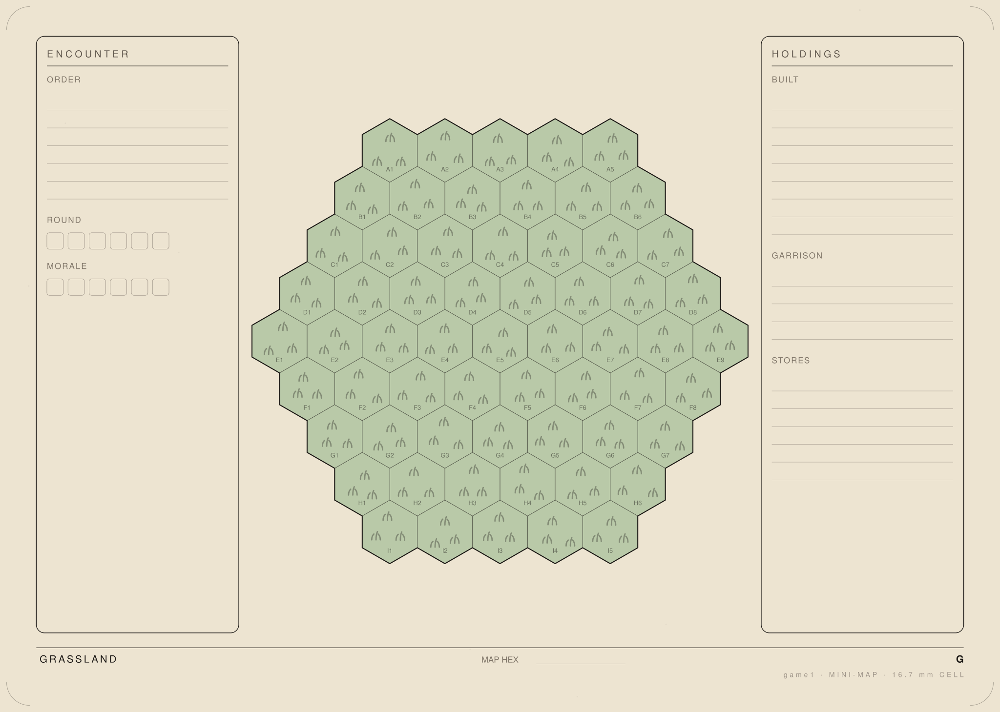
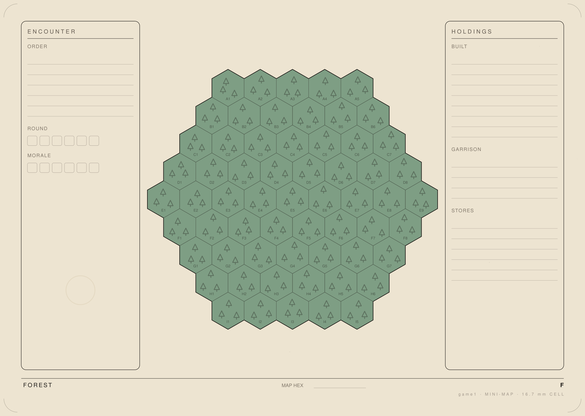
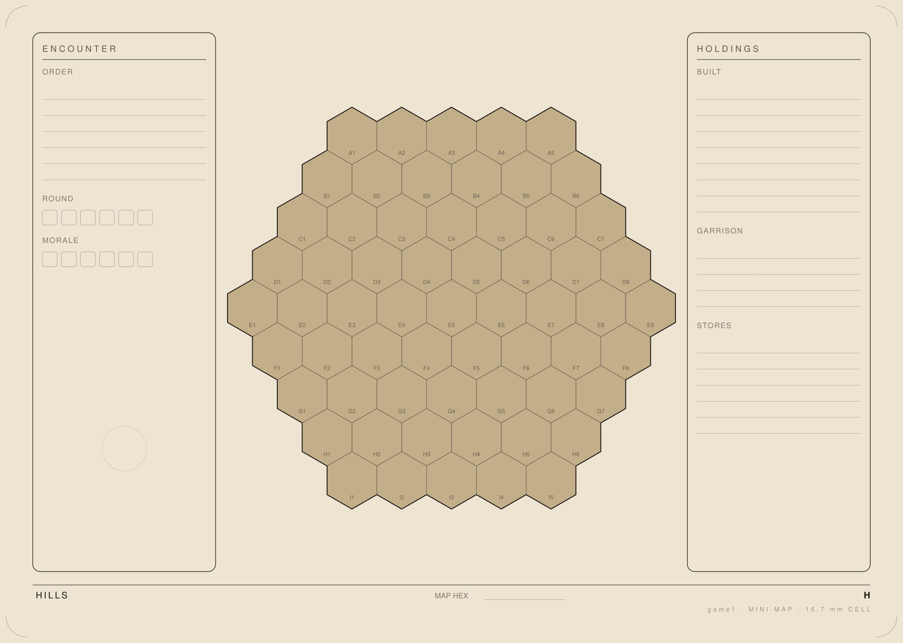
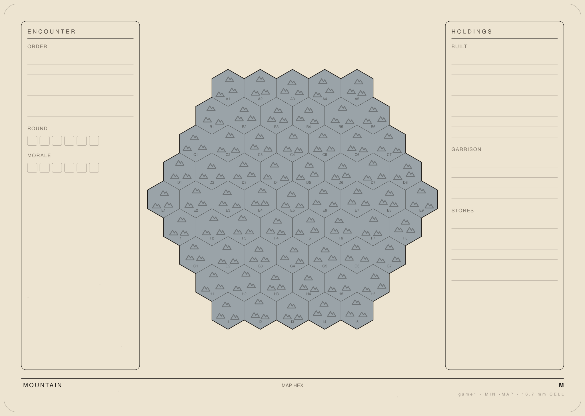
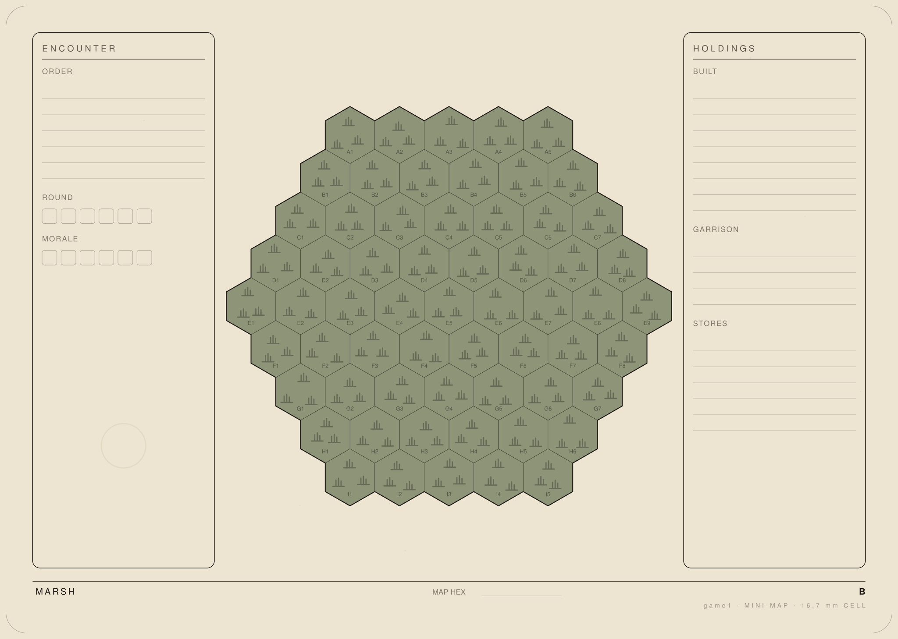
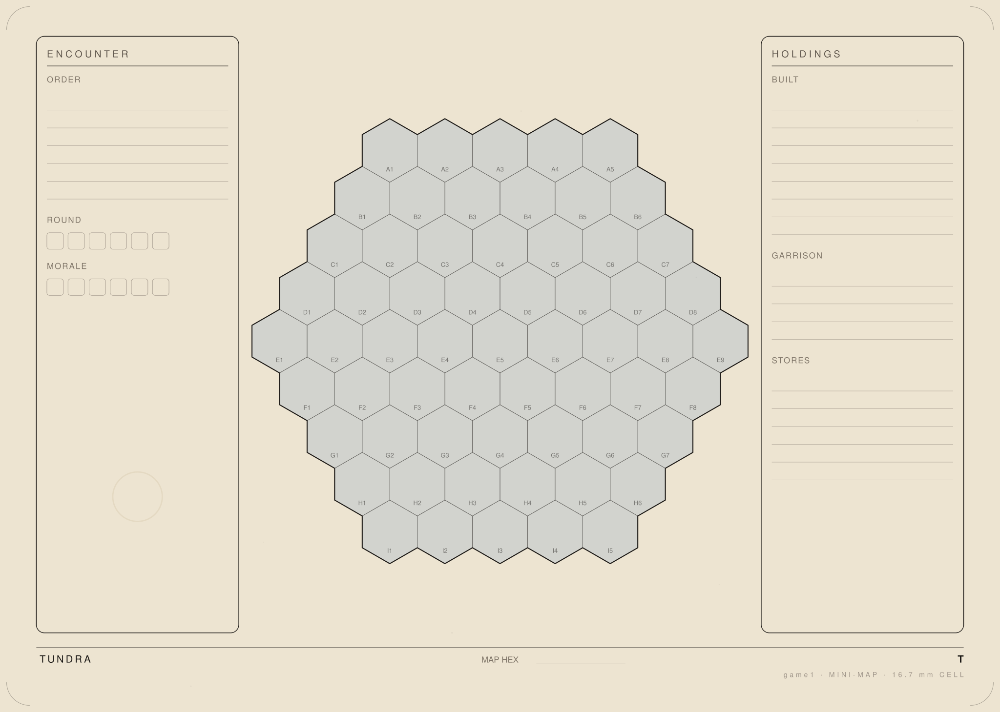
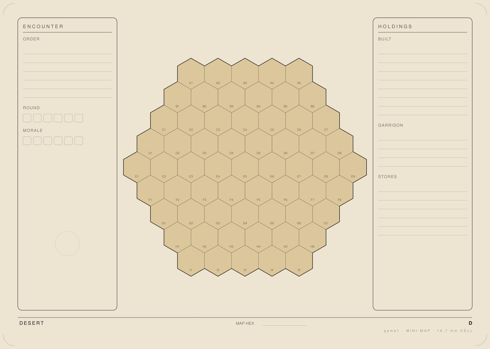
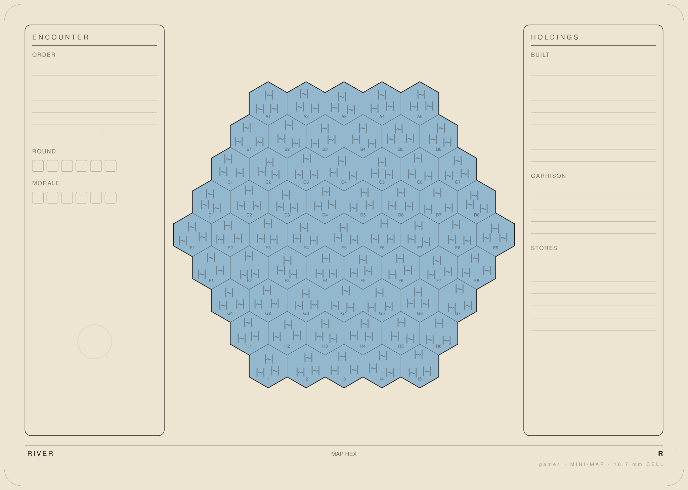
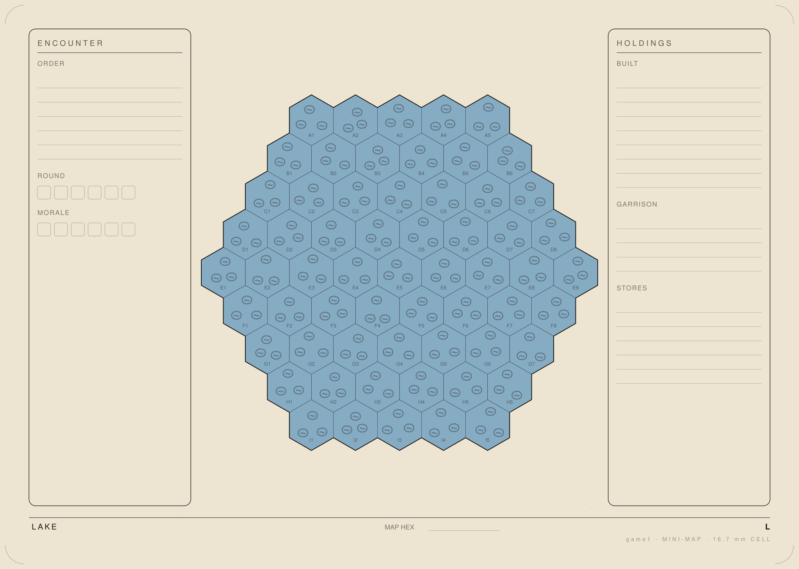
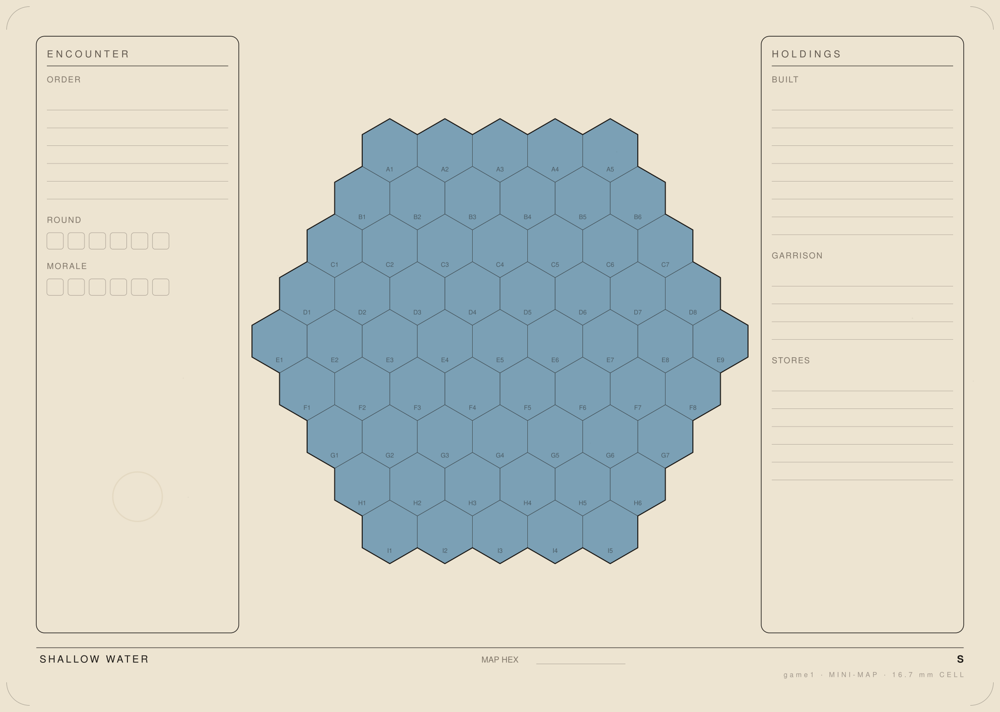
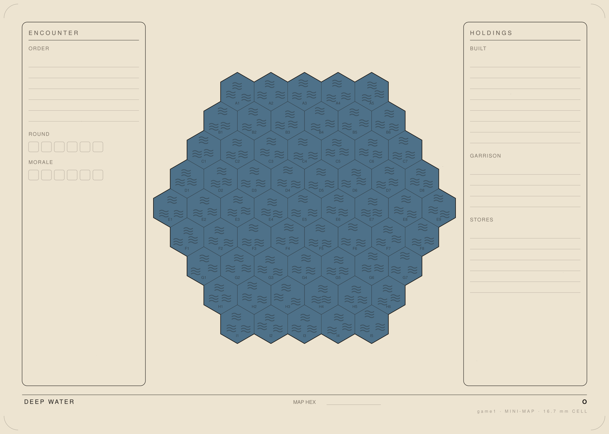